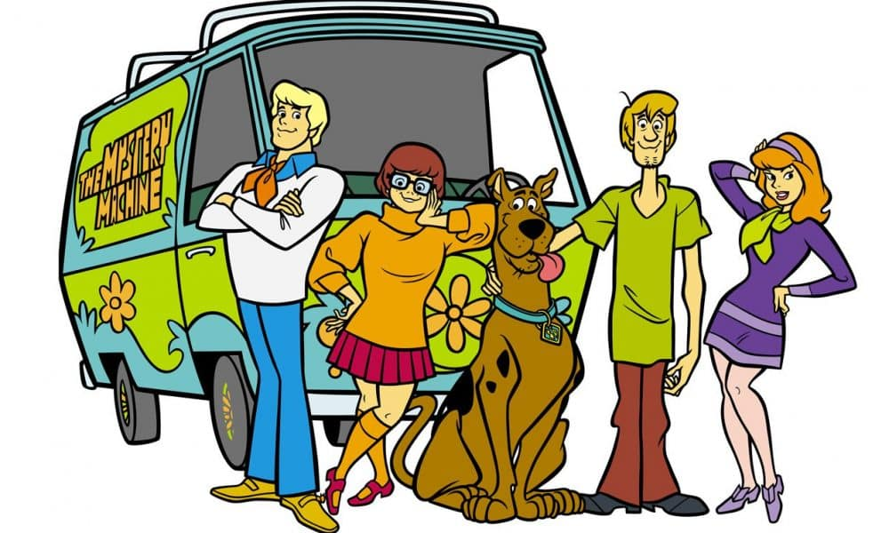

Historia
El Nacimiento de un Ícono: Entre el Caos y la Comedia La creación de Scooby-Doo no fue un accidente, sino una respuesta brillante a los locos años 60. En una época donde la televisión infantil estaba bajo la lupa por ser "demasiado violenta", los creadores tuvieron que reinventar el entretenimiento para niños, mezclando el misterio con una dosis necesaria de humor.
El Clima Social: Mientras el mundo vivía cambios políticos profundos, la audiencia joven buscaba algo fresco.
La Fórmula Ganadora:Scooby nació de la necesidad de calmar las aguas, sustituyendo la acción agresiva por un grupo de adolescentes resolviendo enigmas.
El Legado: Lo que comenzó como un ajuste a las normas de la industria terminó convirtiéndose en un fenómeno cultural. Scooby-Doo demostró que un gran personaje no solo entretiene, sino que se adapta a su tiempo hasta volverse atemporal.
conoce mas sobre scooby-doo

Información sobre Scooby-Doo.
- Grupo Icónico: La dinámica entre el miedoso Scooby, el glotón Shaggy, la audaz Daphne, la inteligente Vilma y el líder Fred (junto a su famosa camioneta, la Máquina del Misterio).
- Misterio y Aventura:La fórmula clásica de investigar eventos aparentemente sobrenaturales que terminan teniendo una explicación lógica y humana.
- Humor Característico: Basado en la comedia física (slapstick), las persecuciones rítmicas y la cobardía encantadora de sus protagonistas.
- Impacto Generacional: Una mezcla de nostalgia y evolución que permite a la franquicia seguir vigente para nuevos espectadores sin perder su esencia original.
momento mas historicos de Scooby-Doo
- El inicio. Se estrena Scooby-Doo, Where Are You!, mezclando por primera vez el terror clásico con comedia.
- El rescate. Aparece Scrappy-Doo. Aunque hoy es polémico, su energía salvó a la serie de ser cancelada por bajos ratings.
- El giro real. Con La Isla de los Zombies, los monstruos dejan de ser personas con máscaras y se vuelven reales, reviviendo la franquicia para una nueva generación.
- El cine. El salto al live-action (con guion de James Gunn) convirtió a Scooby en un fenómeno global de taquilla.
Ficha técnica sobre Scooby-Doo.
| Campo | Datos Específicos |
|---|---|
| Personaje de ficción | Scoobert "Scooby" Doo |
| Edad | 7 años (en años perrunos humanos) |
| Peso | Aproximadamente 32-45 kg (Gran Danés) |
| Estatura | Aproximadamente 1.10 m (en cuatro patas) |
| Primera aparición | "Scooby-Doo, Where Are You!" (13 de septiembre de 1969) |
| Debilidades | Cobardía extrema, hambre constante y los fantasmas. |
| Alias | Scooby, Scooby-Dooby-Doo, Super Olfateador, Rooby. |
Registro
Galería